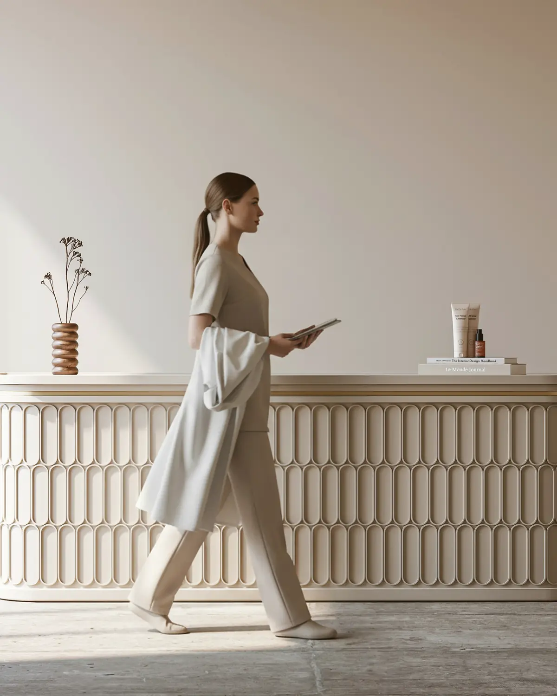
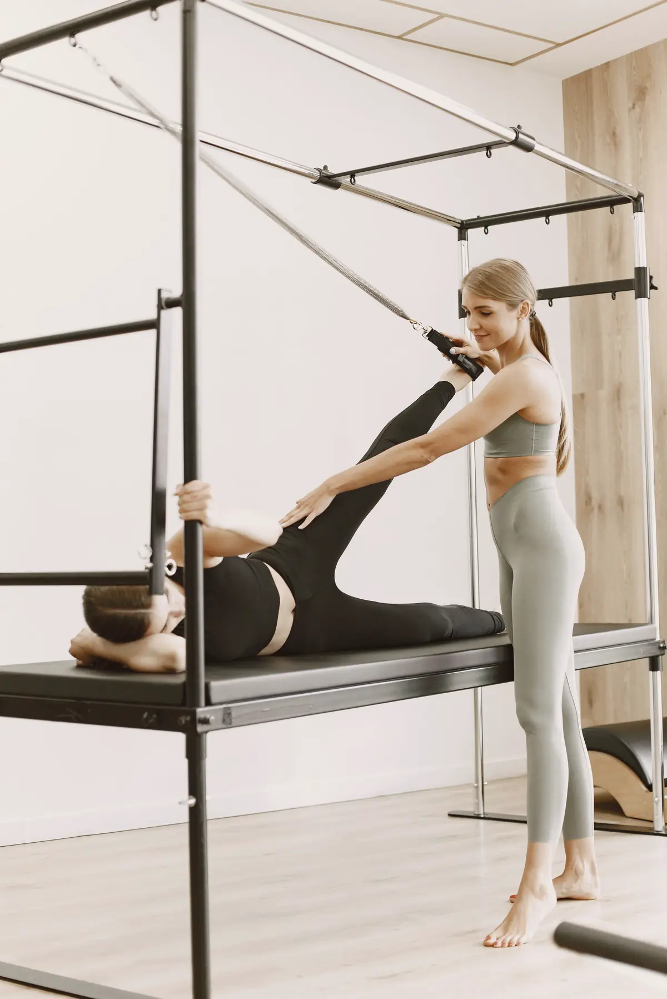
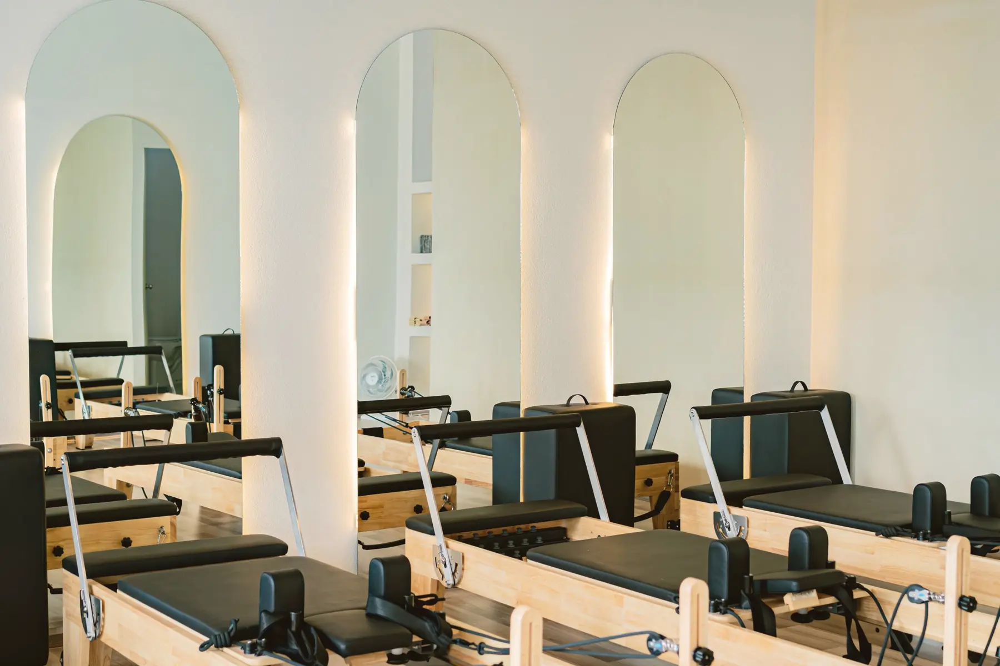
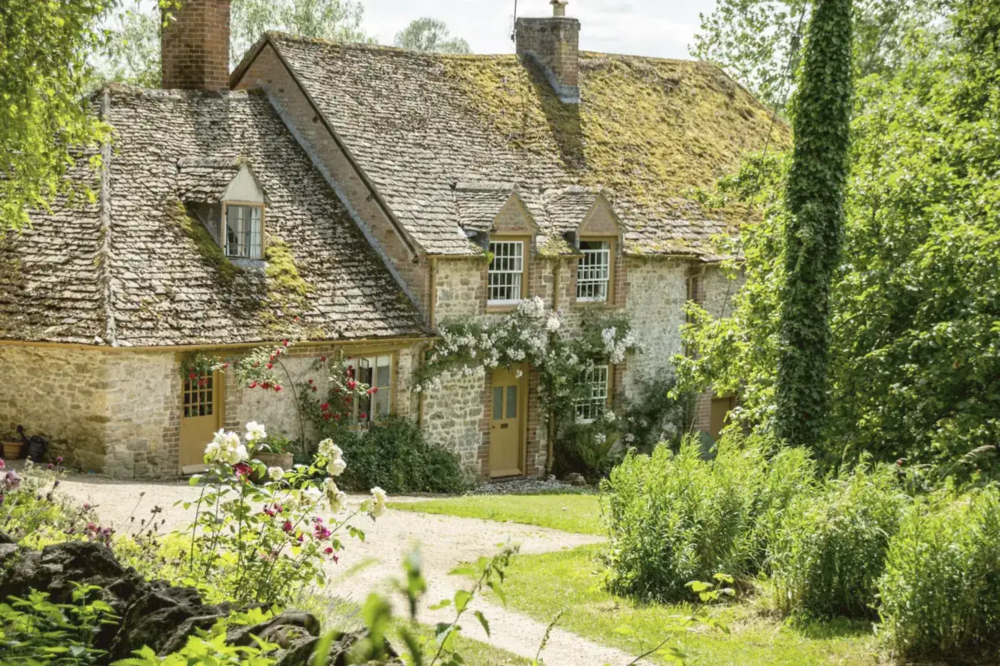
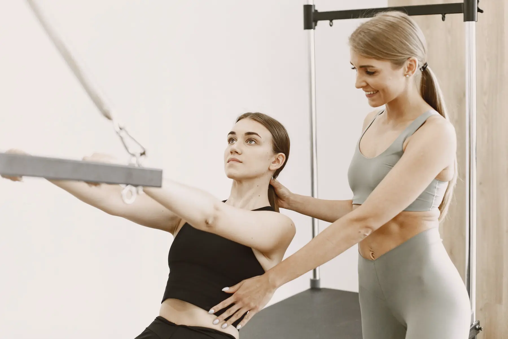
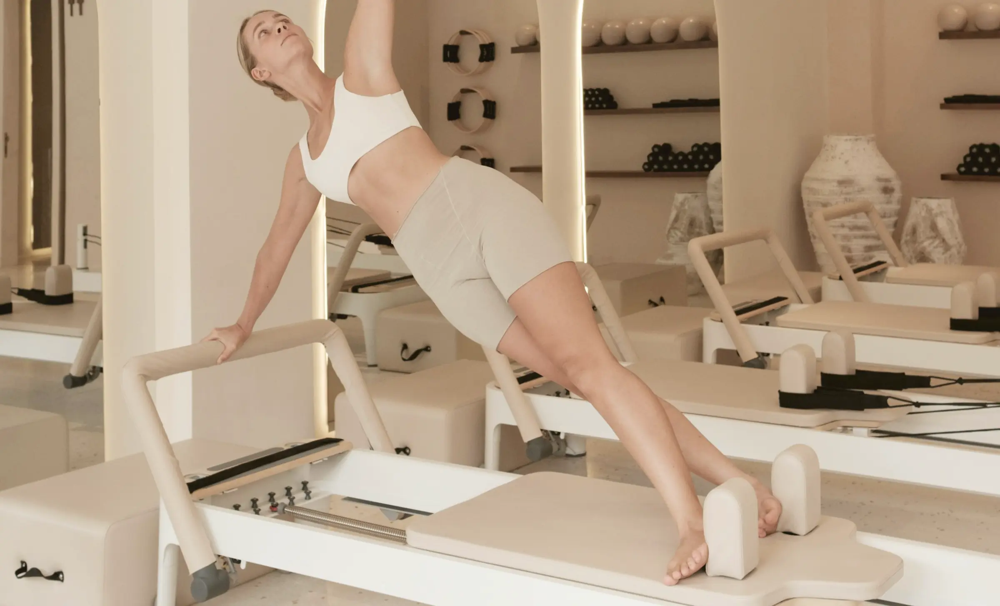

Case study · Reformer Pilates, Marylebone
Six reformers. Six questions.
Ottoline teaches reformer Pilates in a sunlit room off Marylebone High Street. Everyone on a reformer came in with a different question. The site answers each one on a phone, before they think to ask.
In the room This week
- Foundation · Anna
Is there a class I can make today?
She opens it on the bus at twenty to nine. Today's next four classes run along the foot of the photograph, each with its time, its name and its length. The week sits underneath, with Book on every class.
Book goes straight to the studio's own booking, or to WhatsApp with the class, the day and the time already written. A day the studio is closed shows no classes, and the times move on by themselves as the day goes.
Before she arrives she reads one page: which class to book first, to bring grip socks, to come ten minutes early and to tell the teacher about her back. In the studio's own words.
- Today along the photograph, the week below Starter
- The classes, each in one line Starter
- Your first class, step by step Starter

Which class is for someone like me?
Three taps. Has she done reformer before? How does she like it, slow or strong? Is she pregnant, or has she had a baby this year? The site names the class the studio would choose for her, and its next three times.
Then the intro offer, drawn as the class card she'll carry: three classes, punched at the desk one at a time, bought with the studio's own Stripe link. The price is the studio's, never ours.
- Find your first class Plus
- The intro card Plus
- A page for the classes Plus

Is my class already full?
Every class shows the room's six reformers: filled for booked, open for free. The numbers come from a Google Sheet the studio already keeps. An old count shows nothing at all, so the site never says "2 left" when it might be wrong.
A full class turns into Waitlist. One tap sends the studio a WhatsApp with the class, the day and the time written in; the studio decides who gets the place.
She ticks her classes for the week and adds them all to her phone's calendar in one file, at the studio's time. And she sees whether a pack or a membership is cheaper for how often she comes, with any classes a pack would lose to its expiry counted honestly.
- Places left, as reformers Plus
- The waitlist on WhatsApp Plus
- Your week in the calendar Plus
- Packs and memberships Plus

Six reformers, every one spoken for.
Which class, at which stage?
A page for pregnancy and the year after. Which class suits each stage, written by the studio; the go-ahead from her GP or midwife first; and a question for the teacher on WhatsApp, if she has one.
Every class has its own page: who it's for, what happens in it, its next times with places, and who teaches it. From the pregnancy page she taps straight through to Pre & postnatal and its next class.
- Pregnancy and after Signature
- A page for every class Signature
How many classes have I left?
She types the code from her welcome message. Her card comes up with a hole for every class left, the date it runs out, her classes this month and in all, and how far she is from her fiftieth. It comes from the studio's own sheet, which holds codes and never names. If anything in it can't be read, the page says to ask at the desk.
After her first class the teacher sends her a link with her settings: her springs, the footbar, the headrest, the straps, the gear and a note. Nothing is stored anywhere. The settings live in the link, and she can keep them on her phone for the next class.
- The class passport Signature
- Your reformer settings Signature
Can I give it, or bring them all?
She's on reformer six because her sister gave her a class card. On the gifts page her sister chose the card, wrote who it was for and a line, paid with the studio's own Stripe link and sent the details on WhatsApp, so the studio could write the card and hand it over.
The same site takes the bigger asks. Hiring the room for a team or a birthday, with what's included and how many at once, sent as a request and never taken as a booking. Workshops with their teacher and places, each into the calendar in one tap. Retreats with a page each: day by day, the rooms, the deposit link, the days left to pay the balance, and a list to hear about the next ones. Finished ones drop off by themselves.
- Gift class cards Plus
- Private hire and team classes Signature
- Workshops into the calendar Signature
- Retreats, a page each Signature

And at the front, the teacher.

People choose a studio for its teachers. Each teacher has a page with their training in their own words, the classes they teach this week from the timetable, and a request for a private session.
The method library gives every core exercise a page: a photograph, what it works, the usual springs, easier and harder versions, and the classes it comes up in. A short real film shows a first-timer onto the reformer, with the studio's captions, and it loads only when someone taps Watch.
- A page for every teacher Signature
- The method library Signature
- Private and duet sessions Signature
- The reformer, explained on film Signature
Light on the phone, like the room.
Lighthouse on a phone profile, Ottoline's home page, two runs: performance 99 and 99, accessibility 100, largest paint 1.4 to 1.6 seconds, layout shift no more than 0.003. All 31 pages share 18.9 KB of script and 14.4 KB of styles, compressed. Every page passes the accessibility checks.
Pick your class card.
One hole for every page. Each plan runs on a 12-month minimum, then a month's notice, and any single feature can be added to a smaller plan.
Starter
A two-class card
£99 + £25 a month
- The home page and Plan your visit
- Today along the photograph, the week below
- The classes and your first class
- Book on every class
Plus
A five-class card
£199 + £30 a month
- Up to five pages: classes and gifts among them
- Places left as reformers, and the waitlist
- Find your first class, and the intro card
- Your week in the calendar, packs and memberships
- Gift class cards
Signature
A twenty-class card
£349 + £35 a month
- Up to 20 pages; a page for every class, teacher, exercise or retreat counts once
- The class passport and reformer settings
- The method library and teacher pages
- Pregnancy and after, private sessions, private hire
- Workshops, retreats, and the reformer on film
Running costs stay at nothing beyond hosting. Places and passports live in the studio's own Google Sheet, payments go through its own Stripe links, bookings stay in the booking app it already uses, and every request arrives on its WhatsApp.
Every reformer, spoken for.
Send us your Instagram and your timetable, and we'll make a free mockup of your home page with your own room and your own classes.
hello@sitefloor.com